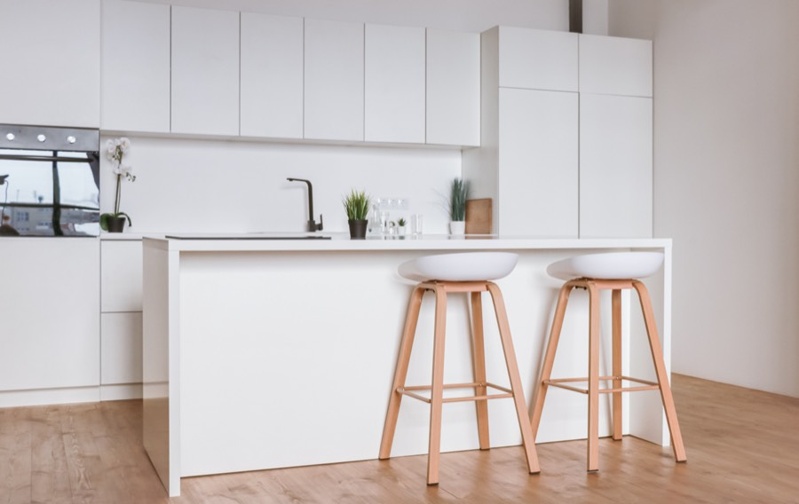
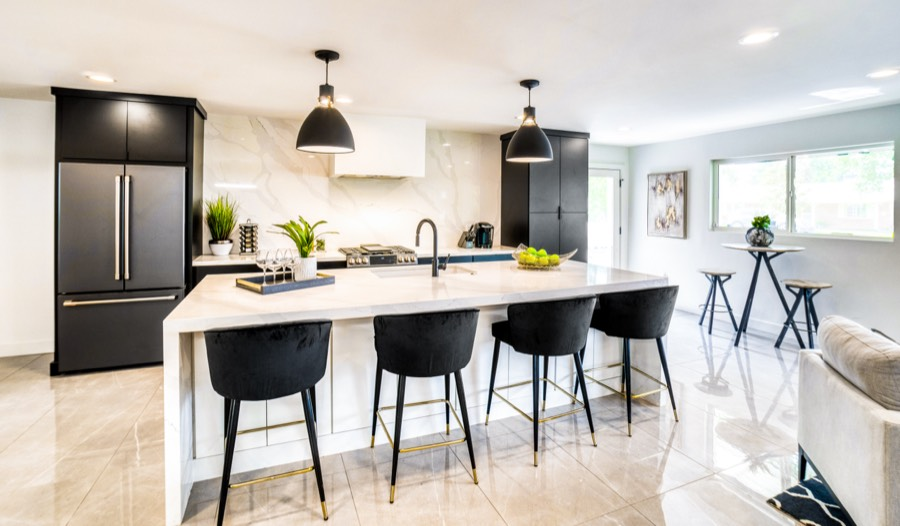
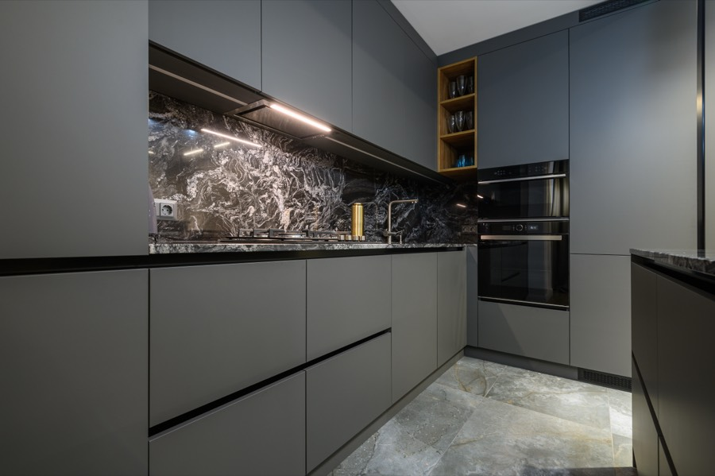
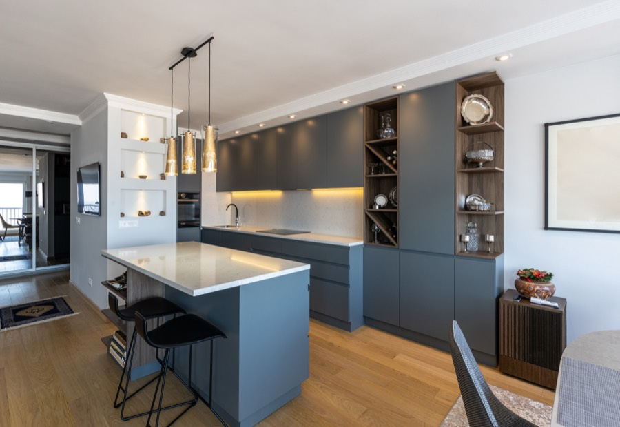
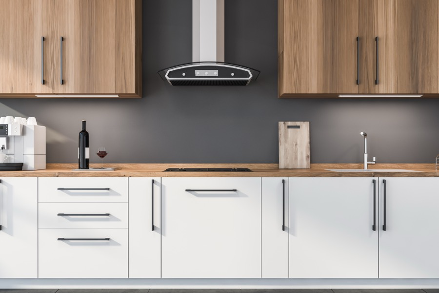
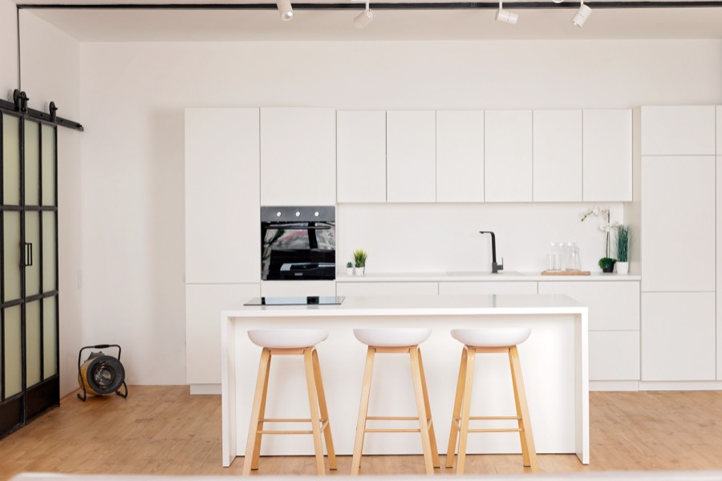
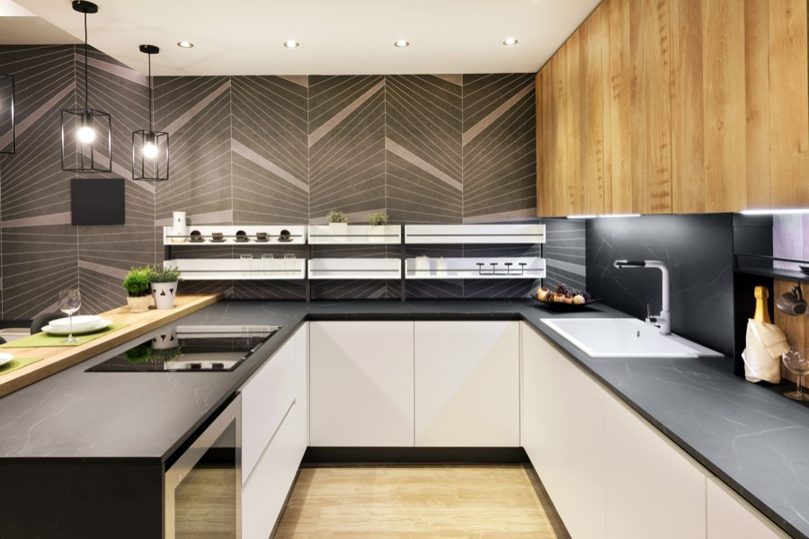
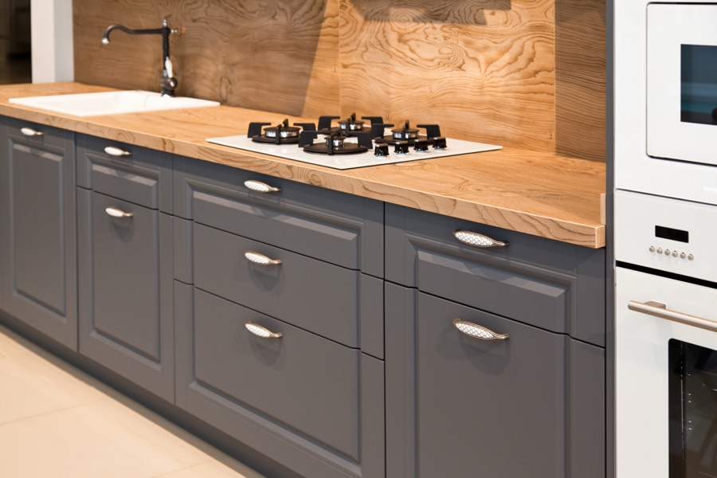

Проєкти
Кожна кухня зроблена під конкретну квартиру: свої розміри, своя геометрія стін, свій набір техніки. Нижче — розміри й матеріали кожної, щоб ви могли приміряти до себе.
 ГОЛОСІЇВ4,2 м · емаль · дуб
ГОЛОСІЇВ4,2 м · емаль · дуб

 ПЕЧЕРСЬК5,1 м · Fenix · кераміка
ПЕЧЕРСЬК5,1 м · Fenix · кераміка

 НИВКИ2,6 м · Egger · компакт
НИВКИ2,6 м · Egger · компакт

 КОЗИН9,4 м · шпон · кварц
КОЗИН9,4 м · шпон · кварц



ОБОЛОНЬ6,8 м · шпон дуба · масив

ПОЗНЯКИ3,8 м · ЛДСП і скло · HPL

СИРЕЦЬ3,4 м · емаль · компакт

ВИШГОРОД7,1 м · емаль і шпон · кварц